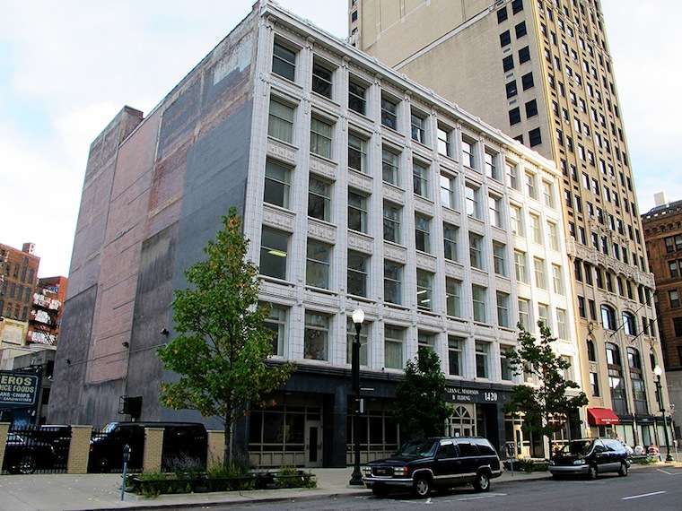

In 1973, Color Cubes is painted onto the far west side of the north-facing exterior wall of a 1906 downtown highrise at 1420 Washington Blvd., designed by Albert Kahn in the Chicago style (its facade, distinctively, is terra cotta).
Located in the Washington Blvd. Historic District , for much of the 20th century a thriving neighborhood of shops and hotels, 1420 Washington has been known variously over the years as the Palmer Building (it was commissioned by Senator Thomas W. Palmer , the Gardner & Schumacher Building, the Robinson Furniture Building, and the Fellowcraft Athletic Club Building. It was home, successively and for many decades, to two prominent furniture companies: Robinson and Gardner & Schumacher.
Now primarily an office building and known as the Julian C. Madison Building, after the pioneering black architect, it has been owned since the mid-1980s after a period of vacancy by Sharon Madison, Julian C. Madison's daughter and herself an architect .
See 7-ELEVEN , EMPIRE BUILDING , FIRST NATIONAL BUILDING , and SHARON MADISON .